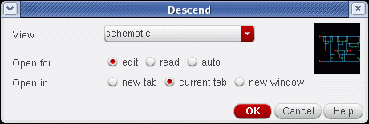
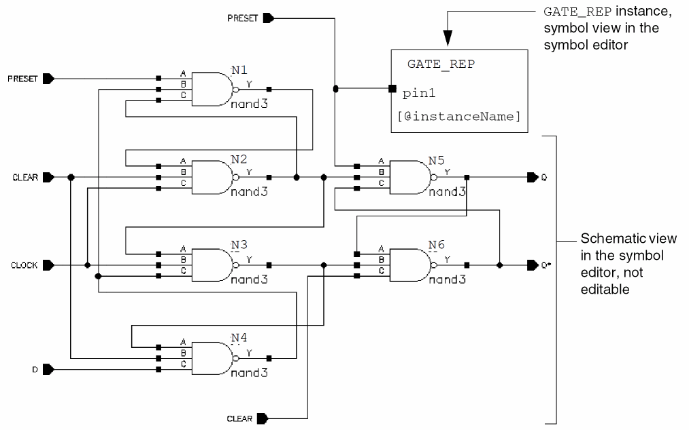
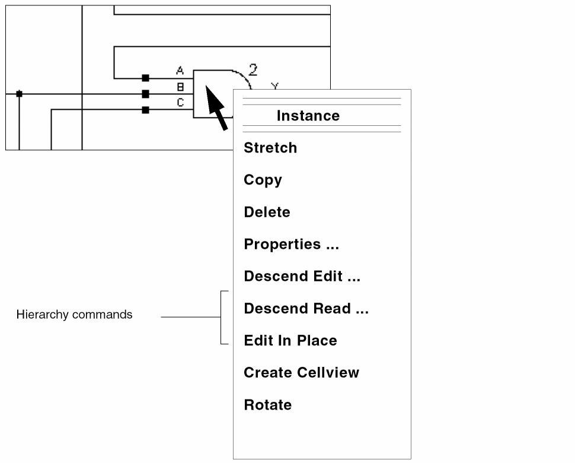
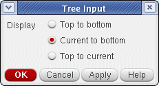
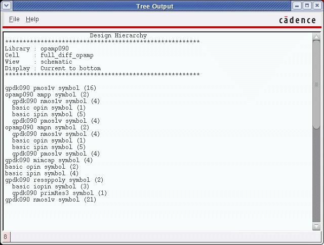

9
Traversing the Design Hierarchy and Creating a Design Configuration View
This chapter provides information about the following topics:
- About the Design Hierarchy
- Exploring the Design Hierarchy
- About the Configuration View of a Design Hierarchy
- About the Hierarchy Editor
- Traversing a Design Hierarchy
- Displaying the Current Hierarchical Scope
- Displaying Cellview Listings Using Print Tree
- Creating a New Configuration View for the Design Hierarchy
- Opening an Existing Design Configuration View
- About the Hierarchy Editor within the Virtuoso Schematic Editor
- Working with a Design Configuration within the Virtuoso Schematic Editor
About the Design Hierarchy
A design hierarchy comprises many levels of a single design. Each time you descend into the design hierarchy, you view a smaller division of the larger design in greater detail. Working in smaller divisions of a design lets you more effectively distribute work across multiple design engineers or groups.
A single instance in a hierarchical design typically represents multiple types of different models. For example, an ASIC may include an underlying gate-level schematic, a layout, or a number of different behavioral descriptions, or a model. A model card is a collection of default parameters for a device. A model file is a collection of model cards. The specification of model cards is different based on the tool and the interface you use.
You have the flexibility to define the relationship between an instance and its various representations. You can descend into any particular lower-level design representation for examination or editing.
Exploring the Design Hierarchy
The following diagram shows an ALU and an ADDR symbol view instantiated in a schematic view.
The following diagram shows the path (library, cell, and view name) for each view. You can traverse into any existing view of the cell that is referenced by an instance and whose view name has a corresponding view type in a registered tool.
Top-Level Schematic View
The following illustration emulates descending from a top-level I/O register schematic into a middle-level I/O latch schematic.
If you click the I3 IOlatch instance shown below, you descend into the schematic view (see next page) of an I/O latch for the instance named I3.
Middle-Level Schematic View
If you click the fflop1 component shown below, you descend from a middle-level I/O latch schematic into the lower-level fflop1 schematic (see next page).
Lower-Level Design Hierarchy
The following illustration shows the lowest level schematic of a design in the hierarchy of this particular design, the fflop1 schematic. The fflop1 schematic instantiates the primitive logic devices (or leaf nodes).
About the Configuration View of a Design Hierarchy
Setup and netlisting processes and simulations should be run from the configured view rather than the original schematic so that you can access the expansion information.
The Cadence® hierarchy editor creates a configuration view that provides expansion information controlling how the design hierarchy can be traversed.
In the above example, the library designLib contains two configuration definitions with the view names mixedConfig and logicConfig. You can use the hierarchy editor to open these views.
About the Hierarchy Editor
A configuration is a set of rules that defines which cellviews under a top-level cell are to be considered part of the design for netlisting, simulation, design partitioning for mixed signal simulation, and analysis.
The hierarchy editor lets you view the hierarchy of a design using a table or a tree format to manage multiple components and views.
You use the hierarchy editor to do the following:
- Change the global bindings
- Add cell-based bindings and cell-based view lists
- Add instance-based bindings and instance-based view lists
- Update your configuration to see the effect of your work
- Change instance bindings inside a block
- Save your rules
For more details about using the hierarchy editor, refer to the Cadence Hierarchy Editor User Guide.
Traversing a Design Hierarchy
You can traverse a design hierarchy to view or edit your design using the hierarchy editor. When you descend into a schematic, the schematic window opens. When you descend into a symbol, the symbol window opens. When you descend into a text view, the text editor specified by the $EDITOR variable in your .cshrc file opens.
When you descend from within a configuration design, you might descend into a view that is not defined in the configuration expansion definition. The new scope is then out of context, and the title bar indicates you are not in a configuration design.
This section discusses two ways to move down the design hierarchy.
-
Use the Edit – Hierarchy – Descend Edit / Read command to descend into any view.
When you choose the View Name List option, you descend directly into the first available view in the list. -
Use the Edit – Hierarchy – Edit In Place command to access the symbol editor from within the schematic editor environment. The schematic, while not editable, shows you the relationship of your lower-level symbol to the entire schematic.For information on how to quickly traverse up and down a design hierarchy using the Virtuoso Schematic Editor Go toolbar, see Navigating Cellviews and Hierarchies in the Virtuoso Design Environment User Guide.
Descending Using the Descend Command
To descend into a lower-level view of an instance,
-
From the view, choose Edit – Hierarchy – Descend Edit / Read.
If you do not have edit permission to descend, you are prompted to use read mode. -
Select an instance in your design to descend into.
When you postselect the instance using the default settings, you descend directly into the lower-level view, usually the symbol view.
The Descend command behaves differently depending on data and options.
Data
- The Descend form appears if the instance you select has several views available for descending into. The form asks you to choose the view to descend into.
- If the instance is a symbol and the symbol represents a multisheet design, a form lets you choose to go to the index sheet or a specific sheet number.
- In the case of a preselected instance, the Descend form opens immediately.
- In case infix mode is enabled or you started the Descend command with a bindkey, the Descend form opens immediately.
-
If the instance is iterated, the Descend form lets you choose the iteration number you want to descend into.

The Descend Edit/Read form above allows you to descend and open a chosen view in a new tab, the current tab (default), or in a new window.
You can also specify whether to open the selected view in edit, read, or auto mode.
edit opens the view in edit mode.
read opens the view in read mode.
auto opens the view dependent upon current edit permissions for the view being descended into.
Options
-
Press the
F3key in the active Descend command to bring up the options form.
Target Cellview Specify the descend target cellview, either query user or use viewNameList.
Environment variable: descendTarget
If the descend target is query user (default), the Descend form opens, asking you which view you want to descend into.
If the descend target is use viewNameList, type view names in a specific order in the View Name List field in the Command tab of the Editor Options form.
The following three forms show data for different instances.- Using a single instance representing a single-sheet schematic on the Descend Edit/Read form.
- Using an iterated instance representing a single-sheet schematic on the Descend Edit/Read form.
- Using a single instance representing a multisheet schematic on the Descend Edit/Read form.
If the Descend Edit/Read form opens, do the following:
- Complete the form depending on your data and options.
-
Click OK.
If you select a graphic view to descend into, either the schematic window or the symbol window opens.
If you select a text view, a text editor window opens. Some text editors automatically check your text file for syntax errors. If errors are found, the Parser Error/Warnings form appears and asks if you want to view the error file and re-edit it.
Editing an Instance in Place
To edit an instance in place within the context of the higher-level schematic,
-
From the view, choose Edit – Hierarchy – Edit In Place.
You descend into the symbol view of the instance to use the symbol editor while still viewing the graphics of the higher-level schematic. The schematic, while not editable, shows you the relationship of your symbol to the entire schematic.

Descending Using the View Name List
By default, when you descend into another view, the system prompts you for the destination view. If you want to bypass this step to descend directly into a view in a certain order, you can use the View Name List option when you are out of context of a design hierarchy.
To change the default so that you automatically descend into the first available view in the view name list box,
-
From the view, choose Edit – Hierarchy – Descend Edit / Read.
The Descend Edit/Read form is displayed. -
Turn on use viewNameList.
This options works with the View Name List option (see also Options). -
Select an instance in the schematic.
You automatically descend into the first view listed in the viewNameList for that instance. To set up the list of views in a specific order, see the View Name List option.
Setting the View Precedence Order
You can arrange the views for descending for data not within a configuration scope.
To rearrange the views in the View Name List option to set up the precedence order for the view to be used as the descend target,
-
From the view, choose Options – Editor.
The Editor Options form appears. -
In the Command tab, type the names in the View Name List field in the order in which you want to descend. For example:
schematic symbol vhdl functional abstract layout synthesis
The arrangement sets up the precedence order of views to use when you descend into another view. - Click OK.
The
Returning Up the Design Hierarchy
After descending, you can return by levels or all at once.
To return to the previous level,
Using Objective-Sensitive Menus to Traverse the Design Hierarchy
To use object-sensitive menus (OSMs), make sure you turned on the OSM option. (For details, refer to Virtuoso Design Environment User Guide.) The default is off.
- Place the cursor over an instance.
-
Press the middle mouse button.
The OSM pops up. - Select a Descend command.
-
With the cursor over an open area in the descended view, use the same process to return to the previous level.

Using Bindkeys to Traverse the Design Hierarchy
Before you use bindkeys, verify that the bindkey file is installed properly.
To use bindkeys, select one of the following:
| Command | Bindkey |
|---|---|
Displaying the Current Hierarchical Scope
When you display the hierarchical scope of your design, you can
- View all the instance names and corresponding cell names of the current window
- View a list of the instance names you have descended into and in which cell name and view name they are located
To display the current hierarchical scope,
-
From the view, choose Edit – Hierarchy – Show Scope.
A dialog box appears that lists the instance names and the corresponding cell names of the current window. - Click Close to close the dialog box.
Displaying Cellview Listings Using Print Tree
The Print Tree utility lists cellviews in a tree structure, allowing a design hierarchy to be captured by displaying the instances in the current cellview.
To list the hierarchy of instances in the current cellview:
-
Select Edit – Hierarchy – Print Tree (or use the
Shift+Tbindkey).
The Tree Input form is displayed.
Figure 9-1 The Tree Input Form
See also schHiTree in the Virtuoso Schematic Editor SKILL Functions Reference. -
Select the Display type to specify the instances that you want to display.
Here: -
Click OK.
The Tree Output window is displayed detailing the structure of the current design hierarchy.
Figure 9-2 Example Tree Output Window
The cellview instances’ information lists the hierarchy of instances in the current cellview, or the instances that are above or below the edit-in-place cell. The number in parentheses () represents how many times that particular instance appears in the design. - Choose File – Close to close the window. If required, you can save (File – Save) the contents displayed in the window to a text file. You can also view (File – Open) in the Tree Output window a text file save earlier.
Creating a New Configuration View for the Design Hierarchy
To create a new configuration view of a design and open the hierarchy editor,
- From the Command Interpreter Window (CIW), choose File – New – Cellview.
-
Change View Name to
configand Tool to Hierarchy-Editor and click OK.
For details on creating a configuration view, refer to the Cadence Hierarchy Editor User Guide.
Opening an Existing Design Configuration View
To open an existing design configuration view,
-
In the CIW, choose File – Open.
The Open File form appears. - Set View Name to config for the schematic design you want to open.
-
Click OK.
The Open Configuration or Top CellView form appears.
When you set the configuration to yes, you can open the hierarchy editor.
When you set the top cell view to yes, you can open the top schematic for this configuration. -
Click OK.
Notice the title bar changes to indicate you opened the schematic view in the context of this configuration:Virtuoso Schematic Editing: mixedVHDL designA schematic Config: mixedVHDL designA config
For details on opening a configuration view, refer to the
About the Hierarchy Editor within the Virtuoso Schematic Editor
The hierarchy editor integration with the Virtuoso® Schematic Editor provides a convenient way to synchronize the configuration database with the Virtuoso Design Environment database. From the Hierarchy-Editor menu on the schematic window, you can open the hierarchy editor, synchronize the database, set instance binding, and view the current set of view binding information.
The following products use the hierarchy editor within the schematic editor: mixed-signal circuit design environment, analog circuit design environment, Verilog® -XL simulator, and VHDL integration.
For more information, see the Cadence Hierarchy Editor User Guide.
Working with a Design Configuration within the Virtuoso Schematic Editor
This section covers the commands available from the Hierarchy-Editor menu within the schematic editor.
- Editing a Design Configuration within the Virtuoso Schematic Editor
- Setting Instance Bindings
- Updating a Design Configuration
- Building a New Inherited View List
- Showing Views Found
To open the hierarchy editor menu within the schematic editor,
-
Choose Launch – Plugins – Hierarchy Editor.
The Hierarchy-Editor menu title appears in the schematic editor menu bar.
Editing a Design Configuration within the Virtuoso Schematic Editor
-
From the schematic window, choose Launch – Plugins – Hierarchy Editor.
If Hierarchy-Editor is not visible, do the following:-
In the CIW, type
cdsHierEditor &
- From the schematic window, choose Launch – Plugins – Hierarchy Editor.
The Hierarchy-Editor menu title appears in the schematic editor menu bar. -
In the CIW, type
-
Choose Hierarchy-Editor – Edit Configuration.
The hierarchy editor appears with information pertaining to your configured schematic.
For more details about using the hierarchy editor, refer to the Cadence Hierarchy Editor User Guide.
Setting Instance Bindings
The Set Instance Binding command lets you define the view to use and lets you choose the inherited view list. You can also set the view to use and the inherited view list from the hierarchy editor, but the Set Instance Binding command from the schematic editor gives you more flexibility on the scope of changes.
To define the view to use and to choose the inherited view list,
-
From the schematic window, choose Hierarchy-Editor – Set Instance Binding.
You are prompted to open the Hierarchy Editor form if it is not already open.
The Set Instance Binding form appears.For more details about using the hierarchy editor, refer to the Cadence Hierarchy Editor User Guide. -
Select one or more instances in the design that you want changed.
The current instance is highlighted and its name is displayed in the Instance Name field. -
Change the Apply To cyclic field to display current instance (the main selection), all selected instances (in a group selection, including the main selection), or all instances (in the cellview).
If you choose all selected or all instances, another cyclic field appears on the form. Choose same master or any master. -
Select View To Use to be bound to these instances.
Views common to all of the selected instances are available for selection. If you want to revert to the default bindings for your configuration in the hierarchy editor, set the View To Use field to <Default>. -
To keep the inherited view list as is and not build a new inherited view list (default), turn on the As Is field.
You can change the inherited view list. To build a new inherited view list, see Building a New Inherited View List below. -
Click Apply to make your changes.
Your changes are reflected in the View To Use field in the hierarchy editor for the instances you selected. -
To propagate your changes to subordinate instances and save your changes, choose Hierarchy-Editor – Update in the schematic window.
All instances that are affected by your View To Use selection are changed in the hierarchy editor and saved.
Updating a Design Configuration
After you edit the configuration, such as defining a new instance binding, you need to update the information in the hierarchy editor. To update a configuration from the schematic editor,
If you are using the schematic editor to edit cellviews, you must save them to have the edits made reflected in your configuration.
The hierarchy editor is updated with the following information:
- The cellviews you selected are saved
- The hierarchy editor display is updated
- The schematic editor is updated with the new configuration
Building a New Inherited View List
After choosing Hierarchy-Editor – Set Instance Binding and completing the steps in the previous section,
- Turn the As Is button off in the Inherited View List field.
-
Type in the inherited view list or click Build to construct the view list.
The Build Inherited View List form appears.
The Available Constants/Views list box shows the combined views from the selected cells.For more details about using the hierarchy editor, refer to the Cadence Hierarchy Editor User Guide. - Select the appropriate views and constants, and click the right arrow to add them to the Inherited View List list box.
- Use the Up and Down buttons to reposition entries for using the appropriate views in a specific order.
- (Optional) To specify a view name that is not listed, type the name in the field below the Inherited View List list box and click Add.
- Click OK.
-
In the Set Instance Binding form, click Apply.
The new view list is added to the appropriate instances in the hierarchy editor. -
From the schematic window, choose Hierarchy-Editor – Update.
Your changes are propagated through subordinate instances in the hierarchy editor and are saved in both the configured schematic and in the hierarchy editor configuration view.
Showing Views Found
In Building a New Inherited View List, you either set the instance binding or built a new inherited view list. This command graphically shows the current view being used for each instance.
To show views used by the instance,
-
From the schematic window, choose Hierarchy-Editor – Show Views Found.
The Show Views Found form appears.
The View Name(s) option shows all the views bound to all the instances in the current schematic cellview. The Highlight Layers option shows the colors used to highlight the instances with the corresponding views. The command graphically shows the current view being used for each instance. - (Optional) Change the highlight layer for each view name.
-
Click Apply.
The schematic display is updated with the appropriate highlight color showing the views used by all the instances.
Return to top